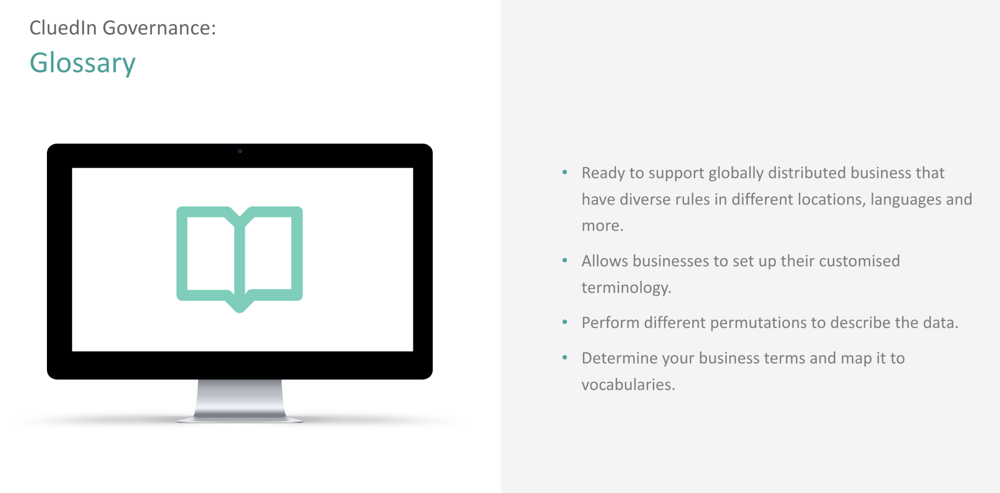

The Data Glossary allows Data Governance teams to map a proper semantic model over data that typically will come from many different sources.

The role of the Data Glossary is to map specific business terminolgy to one or many Vocabularies via a rules engine. For example, you might find that your definition of a “Customer” is an Entity of type /Organization where the organization.type = ‘Enterprise’ and the salesforce.accounting.isPaid = ‘true’ and the dinero.invoices.paymentDate is less than today.
Making these mappings will make it easier to query CluedIn, not having to know all the terminolgy that might not relate to your part of the business.
To create new glossary entries, you simply will need to enter a Name, Description and map this using the rules builder. When querying based off this Glossary, CluedIn will do the underlying mapping to resolve what you actually mean when you ask CluedIn to give you a list of “Customers”.
The Glossary also allows you to set a list of allowed or preferred values per Vocabulary. For example, it might be that you would like to give your downstream consumers the ability to query by a company founding date, but the value of that needs to be a 4 digit representative of a year and it can’t be less that 1900 and greater than the current year. This will not only allow CluedIn to report to you on records that do not adhere to this, but it will help your Data Engineers using CluedIn Clean to understand how they should clean certain data when they see it.
The glossary will also help different parts of the business understand what data they are working with. If you find certain terminology hard to understand, the glossary will help describe what the intention behind certain data is. For example, if we wanted to know what the salesforce.accounting.isPaid value describes, we may set a description of “this details that a customer has paid on their end, but the money has not necessarily made it into our accounts yet. To see if the money is in our account, please use dinero.invoice.isPaid and check if it is true or false”.
The Business Glossary is a way to document and map common business terms into underlying queries against Vocabularies or potentially to more complex queries. The main value is to have a common set of business terms, but predominantly it is to fast-track requests for data when they are recieved. As an example, without a business glossary, if a request came in to give all customer data to the sales team - it is most likely that a lot of research and meetings would be needed to get to the bottom of what is deemed a “Customer”. If this is mapped into CluedIn already then it is simply a matter of choosing a Glossary term which will evaluate the underlying filter for you.
The Glossary will also be able to handle more complex requirements such as “All Customers, what products they have purchased, and the invoices.” You can imagine that this might be a bit harder to serve as we would need to know where this data is, how it connects (if it can at all) and then determin the model in which that request would like the data served. It might be that they want it in seperate files, it might be that they want it in a SQL database with all tables connected in a certain way or it might want it all as documents.
From a governance perspective CluedIn also tracks where this Glossary term is being utilised. Currently this will only be tracked if you use the Streams and if you use the Glossary term to consume the data. As soon as a Term is used in a Stream, Data Mart or Cleaning Project - it will be linked as a Linked Asset.
There are 3 main objects in the Glossary:
- Term
Definition
Rule set to Vocab
Creation Date
Modified Date
Expiry Date
Is Obsolete
Key to Use (If obsolete)
Icon
Relevant Departments
CreatedBy
ModifiedBy
References
Usage (example used by 12 streams)
Tags
Example Use Cases
Lineage (from rule that is built)
Version
Number of Matches (number of records that bind to this concept)
Endorsed By
Description
Acronym
Lexicon
ParentId
-
Term Lexicon
-
Tag
-
Endorsement
A Term is the business terminology that you will be mapping. Good examples include Customer, Product, Transaction, Sale, Deal, Issue but can also extend to something more specific such as Churned Customer, Longterm Customer, Loyal Customer or more. You will need to set some metadata for this Term such as Description, Definition, Expiry Date an more - but the main concept is to map this to an underlying filter of Vocabularies that will derive the underlying data that matches this business terminology. A key entry in the business glossary is a business term. It is a business concept or entity identified by a unique name and defined by a meaningful description specific to the organization, in a language understood by everyone, IT and business people.
A Term could also be very specific such as EBITDA, however many of these Glossary Entries come out of the box with CluedIn as they are industry terms that are not specific to your business.
A Term Lexicon is an alias for a Term. A Term can have 0 or many Term Lexicon entries. You will find that different parts of a business will refer to the same underlying data in different business terms. For example, if you talk to the Sales department they might refer to the term as “Customers” but if you ask the Marketing department, they might call them “Champions” and move onto the Accounting department and they might call them “Billable Entities”. You may find that underneath the Term, they all map to the same filter.
Common uses of Lexicon include:
Synonyms, e.g., Consumer reporting agency/Credit bureau
Lexical variants, e.g., Organization/Organisation, Fiber/Fibre
Quasi-synonyms, e.g., Borrower/Mortgagor
Abbreviations, initialisms, and acronyms, e.g., ARM / Adjustable-rate mortgage
Nonproprietary name to trade name, e.g., Adhesive bandage/ Band-Aid®, Acetaminophen/Tylenol®
In some cases you might find that they don’t exactly match, but can at least be determined as related or as a “child” of one of the other terms. Common “dimensions” of definitions include:
Industry
Geography
Business unit
Business function
Subject area
Department
Glossary entries should be created after the Vocabularies have been finished. You can have multiple layers of Vocabularies and hence there is the need for a mapping process that may span multiple layers. For example, at CluedIn we have a Glossary Term of “Customer” as a Legal Entity (Entity Type) where the hubspot.deal.dealStage=’Closed Won’ and where the dinero.invoice.isPaid=’true’ and where the danskeBank.income.amount = hubspot.deal.dealAmount and where the cluedin.organization.isBankrupt = false. This ruleset will expland and collapse in the future, but it is highly unlikely that the business terminology will change.
A Tag is simply a category or classification that you can apply to a Term. This is useful for finding and filtering on Glossary Term’s when there are many. A good example would be the “Commercial” Tag which allows me to tag certain Terms as being commercial in nature.
For more complex Glossary Terms, CluedIn users can pre-setup complex mapping and modelling rules. For example, if there was a term for SVC or KYC that mapped to a single view of the customer and all data related to it. This not only means that we need to filter by “Customer” but we need to return a “Graph” model. Also notice the complexity that “Customer” in this context can sometimes mean all Legal Entities - even if they are not a “Customer”.
It is a good idea to pre-map models to Export Targets such as BI platforms, ML platforms, Knowledge Graphs or Relational Databases. For example, common BI platforms would either like the data in a relational model or in JSON packets of a particular format. To streamline data proliferation, Glossary Terms can be prebuilt to support different models.
When creating defintions for Term’s, here are some rules to abide by:
Definition must be stated in the present tense
Definition must be stated in a descriptive phrase or sentence
Definition should avoid acronyms and abbreviations
Definition must not contain the words used in the term (tautology)
Is stated in the singular
States what the concept is, not (only) what it isn’t. if a negative is included, it should come after the positive in order to reinforce it.
Is stated in a descriptive phrase or sentence that can on its own
Contains only commonly-understood abbreviations
Does not contain other definitions
Is unambiguous
Is not circular (“A: see B”; “B: see A”)
Is not tautological (“An A is an A”)
Can be substituted for its term without a loss or change of meaning
Is concise and precise (minimize op-ed, repetition, redundancy, rationale, and elaboration)
Is not a list of values
Is coextensive with its concept
Covers the concept completely; if an exception can be found then the definition is incomplete
Does not cover more than--or exceed--the concept
Does not begin with an infinitive
Minimizes conjunctions
Does not begin with “any,” or “some”
Starts with a noun (after the article)
Doesn’t begin with the term being defined (“An A is…”)
Begins with a word in the same class as the term
An important element of the business glossary are relationships between the terms, policies, and rules.
Examples of such relationships:
Is a synonym to
Is calculated from
Replaced by
Related to
Is modifier of
It is important to note that the Glossary is a Business Glossary, not a Data Dictionary and not a Vocabulary. In the flow of terms, the most raw entries are the Data Dictionary (keys from source systems) -> then the Vocabulary which is raw keys mapped into Vocabularies -> then the Business Glossary which is abstracting away underlying Vocabulary and raw keys. Data Dictionaries are managed by Data Engineers, Vocabularies are managed by Vocabulary Owners and Business Glossaries are managed by Glossary Owners.
You can generate Glossary Analytics in CluedIn by calling the analytics endpoint. This will show you information on usage, but more importantly it will show the lineage of the data that matches the Glossary filter and a set of histograms that aggregate the values within those terms. For example, this will allow you to easily see:
-
Number of matched records for a Glossary Term
-
Distribution of values for records that match a Glossary Term e.g. You Glossary Term Geographical Distribution.
-
% of incomplete Glossary entries. For example, each Glossary term should have a definition, description and more. This can help you understand how “mapped” your business is.
The Glossary Terms can also be used in the search user interface for CluedIn. For example, if you wanted to search for “Customers” then you would be given an option to execute ther underlying rules set to run that search instead of just searching for the word “Customers”.
To form your Glossary, we often recommend to interview the business users and to listen carefully to the words and terms that the business is using to request data. For example, if a business user asked for “I need all of our customers in Denmark that we have not signed and NDA with.”
You could interpret this many ways, but it is always best to start out granular and expand if necessary e.g. you could interpret “our customers” as a special type of customers. Start simple.
From this we can extract a few Glossary Terms with some being mapped automatically out of the box from CluedIn:
-
Customer
-
Denmark
-
Non Disclosure Agreement (NDA)
-
Signed
Denmark has already been mapped out of the box i.e. where organization.address.CountryCode = “DK”. The reason we do not use the Country Name is because it is common that systems have multi-lingual content and instead of mapping every permutation of the name, we can use standards instead.
Non Disclosure Agreement (NDA) could come in multiple forms. It could be that we don’t have a Word Document that contains the word NDA in the title attached to the company record. It could be that there is a property in the CRM for setting a true or false if the NDA is signed or not.
Signed could mean multiple things. For example, many digital signature platforms are avialable today that have API’s that allows us to check if a certain agreement has been digitally signed and by whom. Many documents will be scanned PDF documents where smarted and more sophisticated techniques will need to be utilised to determined if a document is signed. At the end of the day, they will all map to Vocabularies, even if that Vocabulary came from a third party of external process. For example, if you utilised a third party machine learning platform to upload a document and it told us if it was signed or not then we will have a Vocabulary to has the value of the result in it.
There are 2 quality metrics that are calculated off Glossary Terms and usage. Trust, Usability and SOMETHING. The way to increase these quality metrics is to have more people create streams off Glossary Terms, to create Clean projects based off Glossary Terms and to have your other Quality MEtrics for the data associated with a Glossary Term be very high.
Usablity is also calculated off:
-
Are all modelling formats supported by the Glossary Term e.g. Supports Excel, Power BI, Data Robot, Azure ML. Often we will need to support writing to an online file so that systmes like Excel can use its “from file feature”.
-
How many streams are running off this Term versus others.
Trust is calculated off:
-
The average ratings of the Glossary Terms and the data associated with it.
-
Is all lineage available for all data sources for a Glossary Term.
If a Glossary Term changes its RuleSet, all streams that use this term will prompt you to reprocess the stream. This typically means removing all data and streaming it all again. This howvere is down to the implementation of that reprocessing logic.
A Rulesset is a Query Filter that determines the records assocaited with the Glossary Term. This takes the shape of a string query that uses Lucene Syntax such as
+entityType:/Organization +hubspot.deal.dealStage:123
or something more complex like:
+(entityType:”/Organization” entityType:”/Business”) +(+hubspot.deal.dealStage:”123” -hubspot.deal.dealAmount:100000) which equates to “Results must have an Entity Type of Organization or Business and must have Deal Stage of 123 and not have a deal amount of 100000”.
Due to the Lexicon, you will be able to use the LexiconResolver.Resolve() class which can take e.g. “/Company” and resolve it to the underlying Entity Type. If you run the resolver over a query like above, it will resolve different terms to the correct underlying term such as “hubspot.sale.dealStage” can resolve to “hubspot.deal.dealStage” if there is a lexicon entry for “deal” of “sale”.
Glossary Terms must be unique and you cannot have a Lexicon Entry that is the same as a Glossary Term.
The Data Glossary will be evaluated in the following cases:
- Using GraphQL
- Creating Outgoing Streams